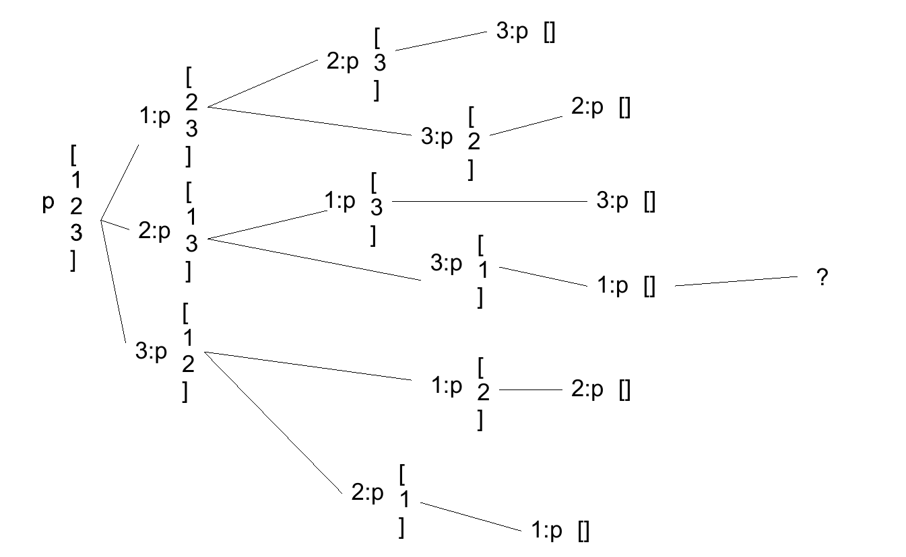

type Set = Int -> Bool
contains :: Set -> Int -> Bool
singletonSet :: Int -> Set
union :: Set -> Set -> Set
intersect :: Set -> Set -> Set
diff :: Set -> Set -> Set
filter' :: Set -> (Int -> Bool) -> Set
bounds = [-1000,1000]
forAll :: Set -> (Int -> Bool) -> Bool
exists :: Set -> (Int -> Bool) -> Bool
type Set = Int -> Bool
a = (\a -> True)::Set
contains :: Set -> Int -> Bool
contains s a = s a
singletonSet :: Int -> Set
singletonSet = \b -> (\a -> a == b)
singletonSet b = \a -> a == b
singletonSet b = let
answer a = a==b
in answer
union :: Set -> Set -> Set union a b = \c -> (contains b c) || (contains a c):: [Int] -> Set list = foldl1 union $ map singletonSet list intersect :: Set -> Set -> Set intersect a b = \c -> (contains b c) && (contains a c)diff :: Set -> Set -> Set diff a b = \c -> (contains a c) && (not (contains b c))filter' :: Set -> (Int -> Bool) -> Set filter' a f = \c -> (contains a c) && (f c)
forAll :: Set -> (Int -> Bool) -> Bool forAll a f = let forAll' 1000 = True forAll' acc = if (contains a acc) && not (f acc) then False else forAll' (acc+1) in forAll' (-1000)exists :: Set -> (Int -> Bool) -> Bool exists a f = not $ forAll a (not . f)
Ещё немного о fib
fib1 0 = 1
fib1 1 = 1
fib1 n = fib1 (n-1) + fib1 (n-2)
fi1 = map fib1 [1..]Безумно медленно

Ещё немного о fib
fib2' (a, b) 0 = a
fib2' (a, b) n = fib2' (b, a+b) (n-1)
fib2 = fib2' (1, 1)
fi2 = map fib2 [1..]Непонятно
Мемоизация
fi4 =
let
fib 1 = 1
fib 2 = 1
fib n = fib4' (n-2) + fib4' (n-1)
fib4' n = fi4 !! (n-1)
in map fib [1..]Profit! (см. Data.Map, Data.Set)
Задание
Функция permute, генерация списка всех перестановок списка
permute [1,2,3] = [[1,2,3],[1,3,2],…,[3,2,1]]Задание
concat [[1,2],[3,4,5],[6]] = [1,2,3,4,5,6]
concat = foldr (++) [] - конкатенация списка списков
foldr – функция свёртки, следующая лекция
Задание
permute' [] = [[]]
permute' list = let
listOfListsWith a = map (\e -> a : e) (permute'
(filter (\x -> x /= a) list))
in concat $ map listOfListsWith list
permute' [1,2,3]
[[1,2,3],[1,3,2],[2,1,3],[2,3,1],[3,1,2],[3,2,1]]Клёви!
permute' [1,2,1]
[[1,2],[2,1],[2,1],[1,2]]Печалька
permute list =
let
xs = permute' [0 .. length list - 1]
deepMap = map . map
in deepMap (\x -> list !! x) xs
import Data.List:m Data.Listpermute [] = [[]]
permute list =
let
listOfListsWith a = map (\e -> a : e)
(permute' $ delete a list)
in concat $ map listOfListsWith list
permute :: Eq a => [a] -> [[a]]
permute [] = [[]]
permute xs = [y | x <- xs, y <- map (x:) $ permute $ delete x xs]